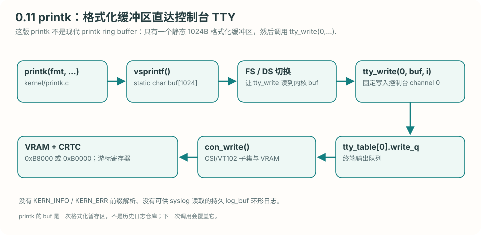
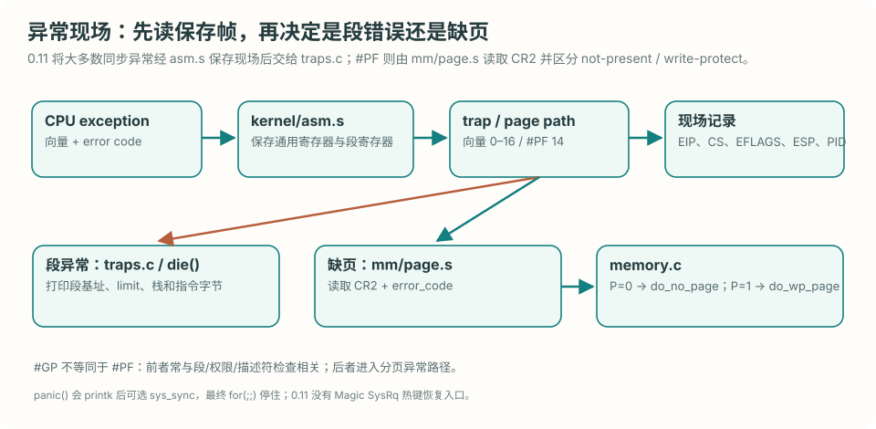

Linux 0.11 内核调试：printk、异常现场与 Bochs
从 printk 的真实输出路径、traps.c 的寄存器现场到 mm/page.s 的 CR2 读取，建立 Linux 0.11 的故障定位流程，并校正 Bochs 命令与 Magic SysRq 的版本误植。
printk · traps · Bochs先区分日志、异常报告和外部调试器
内核调试不是一个单一工具。Linux 0.11 有 printk() 把格式化文本写到控制台，有异常入口保存 CPU 状态并由 traps.c 输出寄存器/段信息；此外还可以让 Bochs 的内部调试器停在某条机器指令上，检查寄存器、内存和 IDT/GDT。
这三个机制解决不同问题：printk 帮助观察程序主动报告的状态；异常现场说明 CPU 为什么跳转到 fault handler；模拟器调试器则能在问题发生前后暂停执行并逐指令检查。把现代内核日志缓冲区、SysRq、kgdb 或 tracepoint 直接放进 0.11，会让学习者误以为当年内核已经拥有这些接口。

printk 的真实实现只有一个 1024 字节静态缓冲区
kernel/printk.c 定义 static char buf[1024]。每次调用用 vsprintf(buf,fmt,args) 格式化，再保存 FS、将 FS 切换到内核 DS，并通过汇编调用 tty_write(0,buf,i)。channel 0 对应控制台 TTY，因此 printk 最终进入控制台 write_q 和 con_write()。
static char buf[1024];
int printk(const char *fmt, ...)
{
va_start(args,fmt);
i = vsprintf(buf,fmt,args);
va_end(args);
/* save fs; make fs point at kernel data */
call _tty_write(0,buf,i);
/* restore fs */
return i;
}这里没有现代的 printk(KERN_INFO ...) 级别前缀解析，没有多 CPU 锁保护的 log ring buffer，也没有 /dev/kmsg 供用户态读取历史日志。这个 buf 会被下一次 printk 覆盖；控制台已经输出的字符留在显示设备上，但不是一个可通过 syslog 系统调用回读的内核日志数据库。
printk 输出到哪个 TTY channel？（展开核对）
固定调用 tty_write(0, buf, i)，即 tty_table[0] 控制台，而不是自动写到串口 1/2。
panic 与异常报告：谁停机，谁结束当前任务
kernel/panic.c 的 panic(s) 先调用 printk("Kernel panic: %s…")；若当前任务不是 task 0，就调用 sys_sync() 尝试同步文件系统，然后进入无限循环。若当前任务是 swapper/task 0，则打印不执行 sync 的提示后同样停住。
异常处理的行为不完全相同。kernel/traps.c 中的 die() 会输出异常名和错误码、EIP/CS/EFLAGS/ESP、FS、当前 LDT 段基址和 limit；若异常来自用户栈，还会打印栈内容，并从异常 EIP 读取指令字节，最后通过 do_exit(11) 结束出错任务。也就是说，一般用户态段错误不必然导致整个内核 panic。
printk("%s: %04x\n",str,nr&0xffff);
printk("EIP: %04x:%p EFLAGS:%p ESP:%04x:%p",
esp[1],esp[0],esp[2],esp[4],esp[3]);
printk("fs: %04x",_fs());
printk("base: %p, limit: %p",
get_base(current->ldt[1]),get_limit(0x17));
/* optional stack + instruction bytes */
do_exit(11);异常处理函数中的 die() 是历史调试报告路径，不是现代 Linux oops 的全部策略。不要把现代 panic notifier、crash dump、kdump 或自动重启流程套进这里。
#GP 与 #PF：段检查和分页检查是不同入口
在 x86 保护模式中，#DE 是除零错误，#GP 是一般保护异常，#PF 是页故障。0.11 的 kernel/asm.s 为大多数硬件异常保存寄存器并跳到 traps.c；页故障则由独立的 mm/page.s 入口处理。

page.s 在 page_fault 中读取 %cr2 取得故障线性地址，并检查错误码 bit 0：若 P=0，页面不存在，调用 do_no_page；若 P=1，页面已存在但访问权限不允许，调用 do_wp_page。后者通常关联写时复制；前者可关联首次访问时的按需装入或匿名页分配。
movl %cr2,%edx /* faulting linear address */
pushl %edx
pushl %eax /* page-fault error code */
testl $1,%eax
jne 1f
call _do_no_page
jmp 2f
1: call _do_wp_page这说明 CR2 是页故障路径中的线性地址现场，不能把它当作所有异常都有的通用“错误地址寄存器”。#GP 的错误码含义也与 #PF 不同。
启用 Bochs 内部调试器：配置开关不是 SysRq
Bochs 的命令行内部调试器需要在构建 Bochs 时使用 --enable-debugger。官方手册明确将其描述为可设置断点、单步、检查寄存器和内存的 GDB-like debugger；这不是内核中的一个功能开关，也不需要修改 Linux 0.11 内核来启用。Bochs 官方内部调试器手册。
不要把 --enable-x86-debugger 或其他 CPU 调试选项当成启用 Bochs 命令行调试器的正确构建参数。也不要把 Magic SysRq 当作 Linux 0.11 的键盘调试功能：本版键盘汇编没有 SysRq handler；Ctrl+Alt+Del 的特殊路径是重启处理，不是现代 SysRq 命令集。
bochs:1> pb 0x7c00 # 物理地址断点
bochs:1> info break
bochs:1> c # continue
bochs:1> s 8 # 执行 8 条指令
bochs:1> regs
bochs:1> sreg
bochs:1> creg
bochs:1> info idt
bochs:1> xp /16bx 0x7c00 # 物理内存
bochs:1> x /16bx 0x7c00 # 线性内存Bochs 命令区分三种断点：pb 物理地址、lb 线性地址、vb 段选择子:偏移地址。bpd n 是禁用第 n 个断点，delete n 才是删除；旧稿把二者混为一谈会造成调试脚本行为错误。
地址检查：物理、线性、虚拟不要混用
Bochs 手册把 x /nuf addr 定义为检查线性地址，把 xp /nuf addr 定义为检查物理地址。比如 xp /16bx 0x7c00 查看 BIOS 加载的 boot sector 物理字节；info idt 和 info gdt 检查描述符表；creg 查看控制寄存器，sreg 查看段寄存器。使用这些命令时先确认当前 CPU 模式，尤其是实模式下的段:偏移地址。
实模式的线性地址由 CS×16+IP 得到；保护模式下则要通过段描述符的 base 加 offset。分页开启后，线性地址再经页目录/页表转换为物理地址。因此“看到 EIP=0x1000 就读物理 0x1000”不是可靠的通用规则。
Bochs 的 bpd 1 会删除断点 1 吗？（展开核对）
不会。bpd 是 disable breakpoint；要删除断点请用 delete 1（或 del 1）。
一套可重复的故障定位顺序
- 先确认症状：无输出、死循环、异常退出、重启、还是 panic。记录最后一条已知输出和复现输入。
- 若 CPU 进入异常入口，先记录向量、error code、EIP/CS/EFLAGS/ESP；页故障还要记录 CR2。
- 用
info break/regs/creg查看模拟器现场，确认当前段寄存器和控制寄存器状态。 - 在对应 C/汇编入口反汇编：#GP 对照
traps.c，#PF 对照mm/page.s与mm/memory.c。 - 回溯最近一次修改，最小化输入，修复后重新跑同一复现步骤。
grep -n 'static char buf\|tty_write' kernel/printk.c
grep -n 'die\|do_general_protection\|trap_init' kernel/traps.c
grep -n 'page_fault\|cr2\|do_no_page\|do_wp_page' mm/page.s mm/memory.c
grep -n 'panic(' kernel/panic.c在 0.11 中没有内核自带的可交互 monitor 或 SysRq 入口；Bochs 是模拟器外部观察者。若 panic 进入无限循环，需要重启模拟器或从外部调试器暂停检查。
源码与工具手册
- kernel/printk.c：单个 1024B 格式化缓冲区与 tty_write(0)。
- kernel/panic.c：panic、sys_sync 与无限循环。
- kernel/traps.c：die、异常报告与 trap_init。
- kernel/asm.s：硬件异常的低级现场保存。
- mm/page.s / mm/memory.c：CR2、do_no_page、do_wp_page。
- Bochs 官方内部调试器手册：断点、寄存器、线性/物理内存检查。
下一章把外部调试器接到 QEMU：但要先解决一个历史工程问题——0.11 的 Image 是 bootsect/setup/system 拼出的原始镜像，而默认链接又会剥掉 GDB 所需符号。